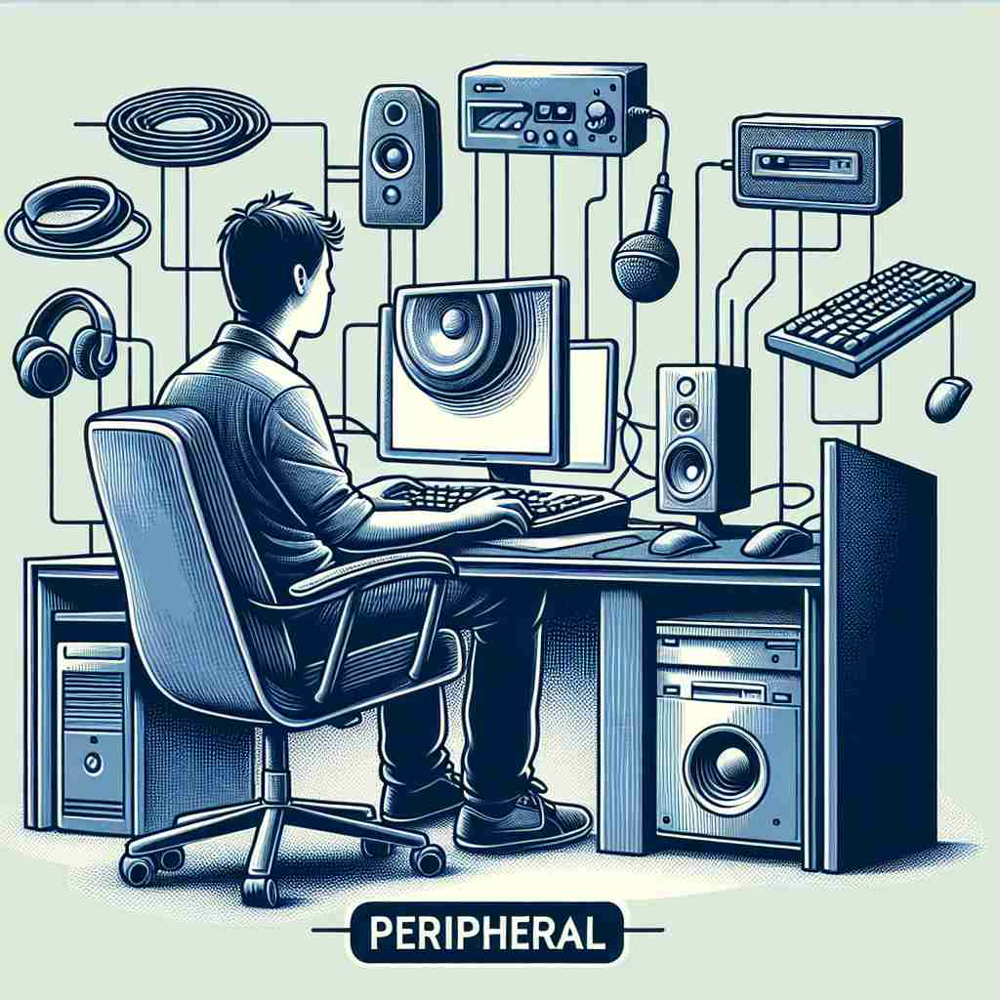

💬 You can connect a peripheral to enhance your computer's performance. 您可以连接外设以提升电脑的性能。

💬 He is setting up a computer peripheral like a speaker. 他正在安装一个像扬声器这样的计算机外围设备。

💬 The peripheral trees provide shade for the animals in the forest. 外围的树木为森林中的动物提供了阴凉。

💬 The picnic took place in a beautiful peripheral landscape filled with flowers and rabbits. 野餐是在一个美丽的外围风景中进行的，那里开满鲜花，还有许多兔子。
🧠 想象一个圆，'peripheral'就是描述圆的边缘或周围的区域。无论是实际的位置、重要性、计算机设备还是生理学上的概念，都可以用这个"边缘"的核心概念来联想。这个核心含义贯穿了'peripheral'的各种用法，有助于更好地理解和记忆这个词的多重含义。
🔈 [pə'rɪf(ə)r(ə)l]
🗝️ adj. relating to or situated on the edge or periphery of something 与某物的边缘或周边相关或位于某物的边缘或周边。
🎭 在一个大型购物中心的地图上，有一圈围绕着中心区域的辅助设施，比如停车场和外部餐饮区。这些设施位于核心区域的外围，属于购物中心的'peripheral'部分。
💬 The peripheral areas of the city are less developed. 城市的边缘地区发展较慢。
🌳 由词根 "peri-"（周围的）和词根 "phero"（带来）及形容词后缀 "-al" 组成。整体意思指在周围的，外部的。
🕸️ 1. perimeter: 周界 2. periscope: 潜望镜 3. periphery: 外围
💡 联想 "peripheral" 为 "peri"（周围）加上 "feral"（野生的），像是一个在周围自由出没的生物。通过 "围绕的" 理解 "外围的" 意思。